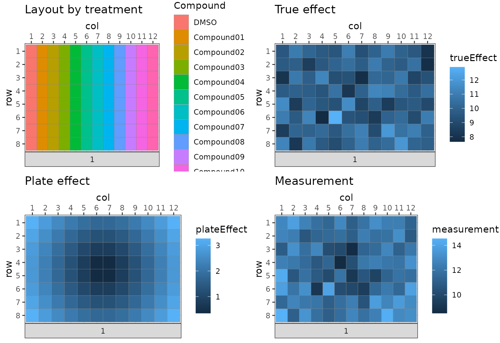
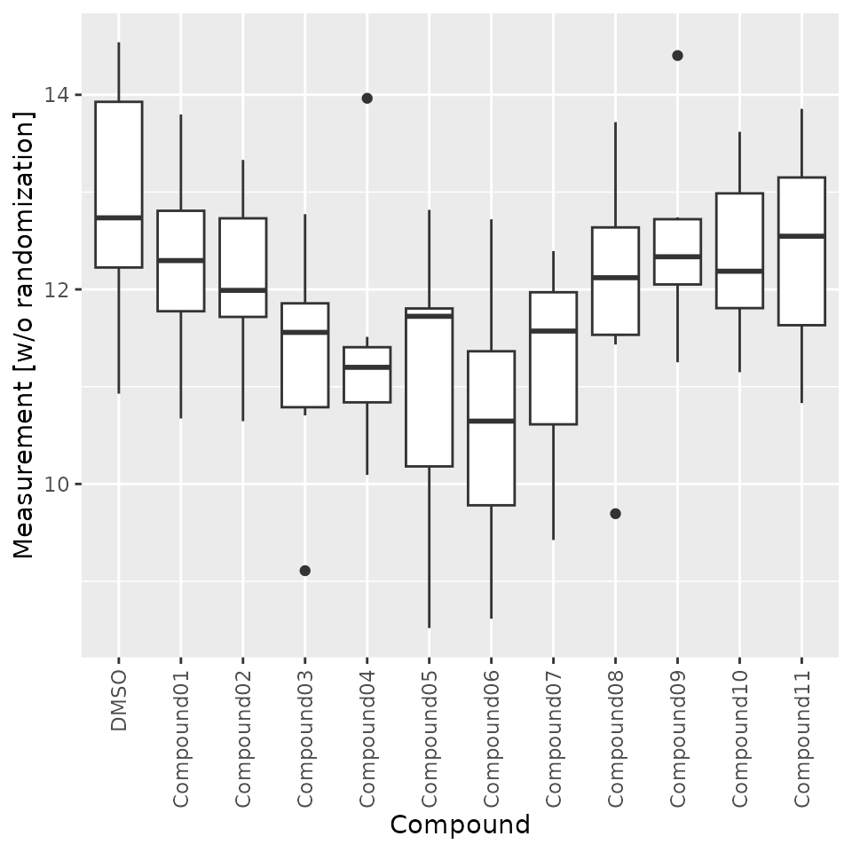
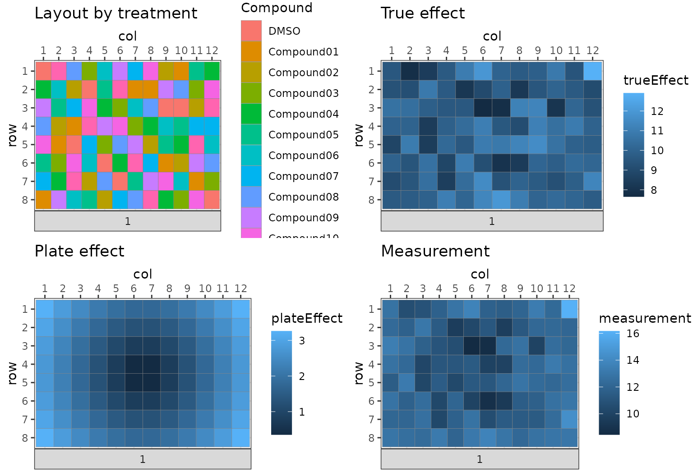
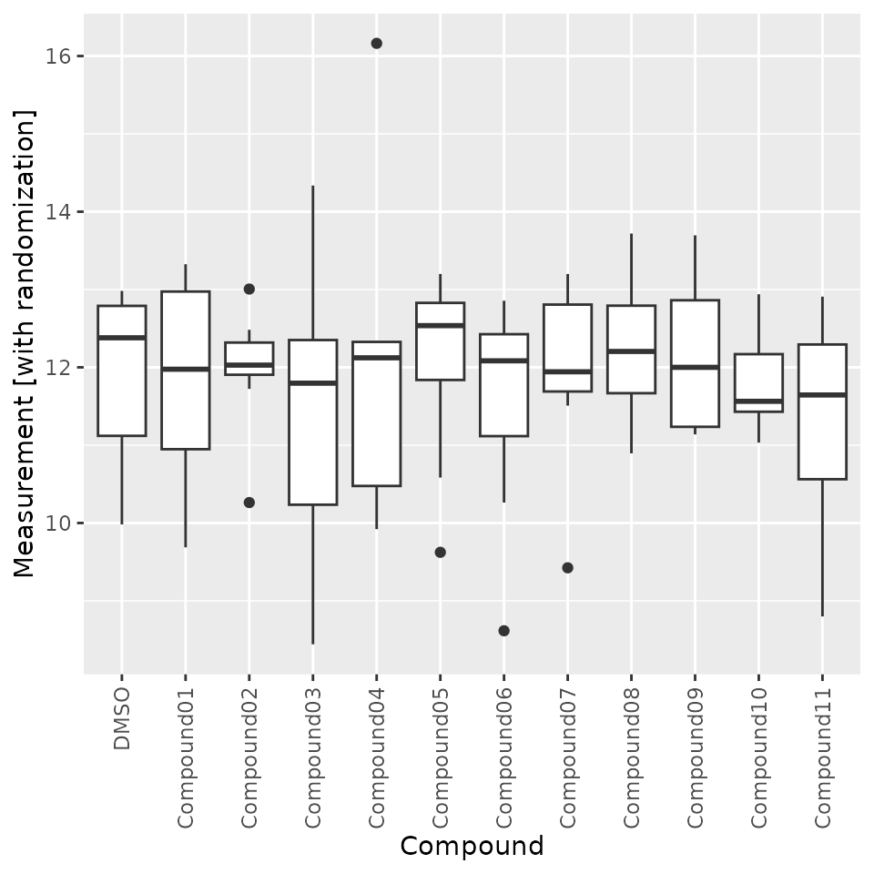

vignettes/false_positives.Rmd
false_positives.RmdIn this document, we demonstrate the necessity of a proper experiment design with a generative model which we use to simulate data with “batch” effects. We show that a proper experiment design helps experimentalists and analysts make correct inference about the quantity of interest that is robust against randomness.
#> ── Attaching core tidyverse packages ──────────────────────── tidyverse 2.0.0 ──
#> ✔ dplyr 1.1.4 ✔ readr 2.1.5
#> ✔ forcats 1.0.0 ✔ stringr 1.5.1
#> ✔ ggplot2 3.5.1 ✔ tibble 3.2.1
#> ✔ lubridate 1.9.3 ✔ tidyr 1.3.1
#> ✔ purrr 1.0.2
#> ── Conflicts ────────────────────────────────────────── tidyverse_conflicts() ──
#> ✖ dplyr::filter() masks stats::filter()
#> ✖ dplyr::lag() masks stats::lag()
#> ℹ Use the conflicted package (<http://conflicted.r-lib.org/>) to force all conflicts to become errorsAssume we perform an experiment to test the effect of eleven drug candidates under development on cell viability. To do so, we treat cells in culture with a fixed concentration of each of the eleven candidates, and we treat cells with DMSO (dimethyl sulfoxide) as a vehicle control, since the drug candidates are all solved in DMSO solutions.
To assess the effect with regard to the variability intrinsic to the experiment setup, we measure the effect of each drug candidate (and DMSO) in eight different batches of cells, which are comparable to each other.
In total, we have 96 samples: 11 drug candidates plus one DMSO control, 8 samples each. The samples neatly fit into a 96-well microtiter plate with 8 rows, and 12 columns.
In order to avoid batch effects and to make the operation simple, all operations and measurements are done by the same careful operator and performed at the same time. The operator has two possibilities:
What is the difference between the two variants? Option 2 apparently involves more planning and labor than option 1. If manual instead of robotic pipetting is involved, option 2 is likely error-prone. So why bothering considering the later option?
Randomization pays off when unwanted variance is large enough so that it may distort our estimate of the quantity in which we are interested in. In our example, the unwanted variance may come from a plate effect: due to variances in temperature, humidity, and evaporation between wells in the plate, cells may respond differently to even the same treatment. Such plate effects are difficult to judge practically because they are not known prior to the experiment, unless a calibration study is performed where the cells in a microtiter plate are indeed treated with the same condition and measurements are performed in order to quantify the plate effect. However, it is simple to simulate such plate effects in silico with a generative model, and test the effect of randomization.
For simplicity, we make following further assumptions:
set.seed(2307111)
conditions <- c("DMSO", sprintf("Compound%02d", 1:11))
# set up batch container
bc <- BatchContainer$new(
dimensions = list(
row = 8, col = 12
)
) |>
# assign samples with conditions and true effects
assign_in_order(
data.frame(
SampleIndex = 1:96,
Compound = factor(rep(conditions, 8), levels = conditions),
trueEffect = rnorm(96, mean = 10, sd = 1)
)
)First we simulate a study in which randomization is not used. In this context, it means that the treatment (controls and compounds in columns) and the plate effect are correlated. The following plot visualizes the layout of the plate, the true effect, the plate effect, and the measurement as a sum of the true effect and the plate effect.
# get observations with batch effect
get_observations <- function(bc) {
bc$get_samples() |>
mutate(
plateEffect = 0.5 * sqrt((row - 4.5)^2 + (col - 6.5)^2),
measurement = trueEffect + plateEffect
)
}| row | col | SampleIndex | Compound | trueEffect | plateEffect | measurement |
|---|---|---|---|---|---|---|
| 1 | 1 | 1 | DMSO | 9.530078 | 3.259601 | 12.78968 |
| 1 | 2 | 2 | Compound01 | 10.946764 | 2.850439 | 13.79720 |
| 1 | 3 | 3 | Compound02 | 10.111003 | 2.474874 | 12.58588 |
| 1 | 4 | 4 | Compound03 | 9.640621 | 2.150581 | 11.79120 |
| 1 | 5 | 5 | Compound04 | 9.466205 | 1.903943 | 11.37015 |
| 1 | 6 | 6 | Compound05 | 11.049547 | 1.767767 | 12.81731 |
cowplot::plot_grid(
plotlist = list(
plot_plate(dat,
plate = plate,
row = row, column = col, .color = Compound,
title = "Layout by treatment"
),
plot_plate(dat,
plate = plate, row = row, column = col, .color = trueEffect,
title = "True effect"
),
plot_plate(dat,
plate = plate, row = row, column = col, .color = plateEffect,
title = "Plate effect"
),
plot_plate(dat,
plate = plate, row = row, column = col, .color = measurement,
title = "Measurement"
)
), ncol = 2, nrow = 2
)
When we perform an one-way ANOVA test with the true effect, the F-test suggests that there are no significant differences between the treatments (p>0.05).
summary(aov(trueEffect ~ Compound, data = dat))
#> Df Sum Sq Mean Sq F value Pr(>F)
#> Compound 11 7.61 0.6917 0.657 0.774
#> Residuals 84 88.43 1.0528However, if we consider the measurement, which sums the true effect and the plate effect, the F-test suggests that there are significant differences between the compounds (p<0.01).
summary(aov(measurement ~ Compound, data = dat))
#> Df Sum Sq Mean Sq F value Pr(>F)
#> Compound 11 41.12 3.738 2.925 0.00258 **
#> Residuals 84 107.34 1.278
#> ---
#> Signif. codes: 0 '***' 0.001 '**' 0.01 '*' 0.05 '.' 0.1 ' ' 1To verify, we calculate Turkey’s honest significant differences using true effect. As expected, no single compound shows significant difference from the effect of DMSO (adjusted p-value>0.05)
versusDMSO <- paste0(conditions[-1], "-", conditions[1])
trueDiff <- TukeyHSD(aov(
trueEffect ~ Compound,
data = dat
))$Compound
trueDiff[versusDMSO, ]
#> diff lwr upr p adj
#> Compound01-DMSO -0.15660919 -1.881368 1.568150 1.0000000
#> Compound02-DMSO 0.16041021 -1.564349 1.885169 1.0000000
#> Compound03-DMSO -0.26495737 -1.989716 1.459802 0.9999957
#> Compound04-DMSO 0.12799598 -1.596763 1.852755 1.0000000
#> Compound05-DMSO 0.15392185 -1.570837 1.878681 1.0000000
#> Compound06-DMSO -0.29447551 -2.019235 1.430284 0.9999872
#> Compound07-DMSO 0.07293908 -1.651820 1.797698 1.0000000
#> Compound08-DMSO 0.46903318 -1.255726 2.193792 0.9988016
#> Compound09-DMSO 0.49798875 -1.226770 2.222748 0.9979416
#> Compound10-DMSO -0.09048129 -1.815240 1.634278 1.0000000
#> Compound11-DMSO -0.47509699 -2.199856 1.249662 0.9986527However, calculating the differences with measurements reveal that Compound 6 would have a significant difference in viability from that of DMSO (adjusted p<0.01).
measureDiff <- TukeyHSD(aov(measurement ~ Compound,
data = dat
))$Compound
measureDiff[versusDMSO, ]
#> diff lwr upr p adj
#> Compound01-DMSO -0.6146694 -2.514910 1.2855708 0.994474856
#> Compound02-DMSO -0.7383338 -2.638574 1.1619064 0.976093386
#> Compound03-DMSO -1.5752825 -3.475523 0.3249577 0.204689940
#> Compound04-DMSO -1.5418117 -3.442052 0.3584285 0.231362089
#> Compound05-DMSO -1.7724524 -3.672693 0.1277878 0.091021614
#> Compound06-DMSO -2.2208497 -4.121090 -0.3206095 0.008978303
#> Compound07-DMSO -1.5968686 -3.497109 0.3033716 0.188684312
#> Compound08-DMSO -0.8412919 -2.741532 1.0589483 0.939725524
#> Compound09-DMSO -0.4007553 -2.300996 1.4994849 0.999893315
#> Compound10-DMSO -0.5485415 -2.448782 1.3516987 0.997945430
#> Compound11-DMSO -0.4750970 -2.375337 1.4251432 0.999450309We can also detect the difference visually with a Box-Whisker plot.
ggplot(
dat,
aes(x = Compound, y = measurement)
) +
geom_boxplot() +
ylab("Measurement [w/o randomization]") +
theme(axis.text.x = element_text(angle = 90, vjust = 0.5, hjust = 1))
Given that our simulation study assumed that no single compound affects cell viability significantly differently from DMSO controls. So the addition of plate effect causes one false discovery in this simulation. It can be expected that the false-discovery rate may vary depending on the relative strength and variability of the plate effect with regard to the true effects. What matters most is the observation that in the presence of plate effect, a lack of randomization, i.e. a correlation of treatment with plate positions, may cause wrong inferences.
Now we use the all but one assumptions made above, with the only change that we shall randomize the layout of the samples. The randomization will break the correlation between treatments and plate effects.
We use the builting function mk_plate_scoring_functions
to define the scoring functions for the plate layout. We then use the
optimize_design function to randomize the layout of the
samples.
set.seed(2307111)
bc_rnd <- optimize_design(
bc,
scoring = mk_plate_scoring_functions(bc,
row = "row", column = "col",
group = "Compound"
)
)We add plate effect to the randomized data and calculate the measurement.
| row | col | SampleIndex | Compound | trueEffect | plateEffect | measurement |
|---|---|---|---|---|---|---|
| 1 | 1 | 1 | DMSO | 9.530078 | 3.259601 | 12.78968 |
| 1 | 2 | 24 | Compound11 | 7.810705 | 2.850439 | 10.66114 |
| 1 | 3 | 57 | Compound08 | 8.419993 | 2.474874 | 10.89487 |
| 1 | 4 | 4 | Compound03 | 9.640621 | 2.150581 | 11.79120 |
| 1 | 5 | 91 | Compound06 | 10.952227 | 1.903943 | 12.85617 |
| 1 | 6 | 94 | Compound09 | 11.928334 | 1.767767 | 13.69610 |
cowplot::plot_grid(
plotlist = list(
plot_plate(dat_rnd,
plate = plate,
row = row, column = col, .color = Compound,
title = "Layout by treatment"
),
plot_plate(dat_rnd,
plate = plate, row = row, column = col, .color = trueEffect,
title = "True effect"
),
plot_plate(dat_rnd,
plate = plate, row = row, column = col, .color = plateEffect,
title = "Plate effect"
),
plot_plate(dat_rnd,
plate = plate, row = row, column = col, .color = measurement,
title = "Measurement"
)
), ncol = 2, nrow = 2
)
When we apply the F-test, we detect no significant differences between any compound and DMSO.
randMeasureDiff <- TukeyHSD(aov(measurement ~ Compound,
data = dat_rnd
))$Compound
randMeasureDiff[versusDMSO, ]
#> diff lwr upr p adj
#> Compound01-DMSO -0.05930995 -2.268768 2.150148 1.0000000
#> Compound02-DMSO 0.10429864 -2.105160 2.313757 1.0000000
#> Compound03-DMSO -0.41812087 -2.627579 1.791337 0.9999637
#> Compound04-DMSO 0.08581910 -2.123639 2.295277 1.0000000
#> Compound05-DMSO 0.18471545 -2.024743 2.394174 1.0000000
#> Compound06-DMSO -0.33999104 -2.549449 1.869467 0.9999956
#> Compound07-DMSO 0.08156504 -2.127893 2.291023 1.0000000
#> Compound08-DMSO 0.35967314 -1.849785 2.569132 0.9999922
#> Compound09-DMSO 0.30525718 -1.904201 2.514716 0.9999986
#> Compound10-DMSO -0.05702472 -2.266483 2.152434 1.0000000
#> Compound11-DMSO -0.52416017 -2.733619 1.685298 0.9996658We can also use the boxplot as a visual help to inspect the difference between the treatments, to confirm that randomization prevents plate effect from affecting the statistical inference.
ggplot(
dat_rnd,
aes(x = Compound, y = measurement)
) +
geom_boxplot() +
ylab("Measurement [with randomization]") +
theme(axis.text.x = element_text(angle = 90, vjust = 0.5, hjust = 1))
The simple case study discussed in this vignette is an application of generative models, which means that assuming that we know the mechanism by which the data is generated, we can simulate the data generation process and use it for various purposes. In our cases, we simulated a linear additive model of true effects of compounds and control on cell viability and the plate effect induced by positions in a microtitre plate. Using the model, we demonstrate that (1) plate effect can impact statistical inference by introducing false positive (and in other case, false negative) findings, and (2) a full randomization can guard statistical inference by reducing the bias of the plate effect.
While the case study is on the margin of being overly simple, we hope
that it demonstrates the advantage of appropriate experiment design
using tools like designit, as well as the necessity of
statistical techniques such as randomization and blocking in drug
discovery and development.